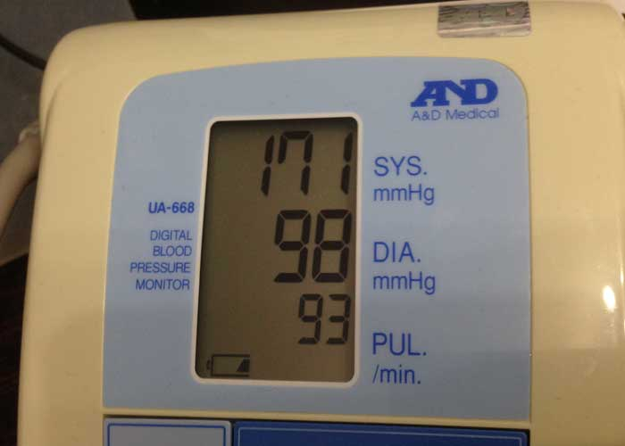
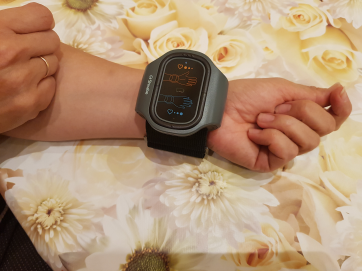

Поддръжка срещу хипертонията


Ангелина Ангелова на 46 години
Хипертония ли? Разказвам за правилното коригиране на кръвното налягане.
“С такова кръвно не се живее” – много често съм чувала тази фраза от моята лична лекарка. 200/150 – 250/180 – това е диапазонът, в който то можеше да се колебае. Лекувах се дълго и упорито и успях да сваля кръвното си налягане до 130/80! Искате ли да разберете как? Прочетете по-долу.

Ще започна с предисторията. Здравейте, аз съм Ангелина и съм на 46 години. И вече 15 години страдам от хипертония. За да сваля кръвното си, опитах различни средства, но нищо не помагаше. Класически случай. Става ми лошо, отивам на лекар. Изследвания, преглед и рецепта. Пия лекарство по 3 пъти на ден. След време отново ми става лошо. Отивам в болницата. Преглед, изследвания, рецепта. Плюс още едно ново лекарство. И така може до безкрайност. Някои лекарства ги спряха напълно, на други им увеличиха дозата 3 пъти, понякога ми изписваха подсилване на едно лекарство с друго. Стигна се до абсурда, че ако пропусна едно хапче, едва ли не умирах. Ставаше ми толкова зле, че не можех да си отворя очите от болка. А сутрин ВИНАГИ стабилно вдигах кръвно. И тогава разбрах, че няма да издържа дълго.
Започнах да търся алтернативни методи, но те не бяха толкова много. Един от тях едва не ме довърши. Добре, че когато ми стана зле на стълбището, съседката на Мария беше до мен. Щях да падна по стълбите и да си счупя всички кости. Тя ме подхвана и ме изпрати до апартамента. Мария е моят ангел. Оказа се, че тя работи като асистент в голяма фирма за производство на медицински изделия. И на следващия ден ми донесе АВР-051.

Въртях тази чудотворна гривна в ръцете си няколко минути и си мислех, че това е някаква шега. Но Мария ме убеди, че само за седмица и ще се почувствам много по-добре, защото този коректор на кръвното налягане е последната дума на техниката. Аз самата никога в живота си не бих си го купила, но се доверих и реших да опитам.
Изглежда като ръчен тонометър, само че в него има 2 програми. Първата е за мен, за хипертонията. Втората е за хора с ниско кръвно налягане. Използва се лесно. Просто слагаш гривната на лявата си ръка и я включваш. В зависимост от избраната програма, коректорът на кръвното започва да предава специални електрически импулси, които привеждат тонуса на кръвоносните съдове в нормално състояние.
Ефектът, разбира се, не се усети веднага (тук всичко индивидуално зависи от характеристиките на тялото и степента на заболяването), но продължавах да правя всичко според инструкциите. Слагах си го 2-3 пъти на ден буквално за няколко минути. В гривната има таймер и за това устройството само се изключва, когато свърши процедурата. Преди да се изключи издава звуков сигнал и с него винаги е ясно, когато свършва сеанса.
И буквално след една седмица кръвното ми започна да влиза в нормата. Не вярвах на тонометъра си и дори си купих друг. Но и двата показаха не 230/170, а 170/90! Това е голям напредък за мен. Кръвното наистина започна да ме притеснява по-малко. Спря да скача през деня и да се вдига сутрин. Сънят ми и общото ми здравословно състояние станаха по-добри състояние. След 2 седмици минаха болките в десния хълбок и главоболието.
Дори усещането, че очите ми ей сега ще се пръснат повече не се появи, защото тонометърът ми показваше 135/75!

Продължавах да ходя на преглед ри личния си и тя отбеляза, че състоянието ми като цяло много се е подобрило. След два месеца си направих изследвания. И лекарката, като видя положителната динамика, предложи да намалим дозата на моите лекарства. Бях много уплашена, но се оказа, че е било напразно. Не се чувствах по-зле, коректорът на кръвното наистина ми помогна.
Слагайки гривната по няколко пъти на ден, забелязах изцяло нейния ефект върху себе си. Започнах да се чувствам не само по-добре, но и по-енергична. Моята вялост премина, дори спрях да съм чувствителна към времето. Коректорът на кръвното налягане доведе до баланс не само моето физическо, но и емоционалното ми състояние. Струва ми се, че с него съм се подмладила с 15 години, защото за първи път от много време нищо не ме притеснява.

Благодарна съм на съседката си, че ми отвори света на тези полезни технологии. Знаете ли, това наистина е страхотно. След няколко години нашата медицина ще стигне такова ниво, че ще се лекуваме бързо и самостоятелно. Точно като мен с коректора на кръвното налягане АВР-051. И ако Вие сте в крак с времето, но Ви пречи високото кръвно, последвайте моя пример. Още повече, че АВР-051 може да се купи директно от производителя от официалния му сайт. Удобно е. Не трябва да го търсите по аптеките.

-

История за здравето
Общност
523.3K участници
8 публикации на месец -

Здрава медицинска сестра, здрава нация
Общност
15K участници
8 публикации на седмица -

ЗДРАВОСЛОВЕН ЖИВОТ
Общност
9.3K участници
10 публикации на ден -

Революция на здравата нервна система
Общност
21K участници
4 публикации на ден -
Хубаво здраве 24/7
Общност
3.2K участници
10 публикации на ден
Цветомира Стефанова
Благодаря за хубавата статия!!! На всички хипертоници ще им бъде полезно да прочетат и да научат нещо ново за себе си. Болен съм от повече от 20 години. Ходих по различни лекари и вземах различни лекарства. Ще си поръчам тази гривна, надявам се да ми помогне.
Грета Иванова
наскоро ми поставиха хипертония. Мисля си, че е по наследство, всички по майчина линия са имали. В момента се изследвам, надявам се, че не съм в напреднала фаза. Между другото, вчера вече си поръчах гривната, надявам се, че няма да ми се наложи да пия лекарства с години.
Богдан Тодоров
Аз съм хипертоник с двадесетгодишен стаж. Без лекарствата си буквално умирам((( Ако пропусна да си взема хапчетата, то трябва да си напиша завещанието... Всичко може да се случи. И най-лошото е, че много лекарства просто спират да действат и трябва да пиете все по-силни и по-скъпи лекарства. Добре е, че има такъв коректор на кръвното налягане. С него се чувствам много по-добре, сънят ми стана по-здрав, главоболието намаля. И най-важното, кръвното ми стана нормално!
Яна Димитрова
Страдам от тази злощастна хипертония изглежда вече цял живот! Това заболяване изобщо не ми дава да живея нормално. Лекувах се при най-добрите лекари, без резултат. Сума пари похарчих за лечение!!!!!!!!!!! Вече не вярвам в нищо
Дарина Желева
За пореден път намирам полезна информация за себе си на този сайт. Благодаря за интересните статии.
Марияна Атанасова
Откриха ми хипертония преди 2 години. Симптомите бяха точно такива, каквито се описват в тази статия. И аз препоръчвам на всички да не изоставят болестта си. За съжаление, тогава все още нямаше такъв коректор. Може би болестта ми щеше да е много по-лека. Сега нося коректора на кръвно налягане и се чувствам много по-добре.
Иван Йончев
Това е много по-хубаво от моя фитнес часовник. Наистина, не мислех, че тоа е възможно. Купих гривни и за жена ми, и за родителите ми, много са доволни.
Михаил Михов
Всичко е в начина на живот. Трябва да ядете правилно, да следите за теглото си и редовно да ходите на лекар. Тогава няма да имате хипертония. Здравето ни е в нашите ръце.
Николина Нейчева
Много хубаво казано, че нашето здраве е в нашите ръце, по-точно на тях. Сложих си гривната и край, нямам проблем с кръвното. Това е супер изобретение, сякаш е дошло от далечното бъдеще.
Виолета Попова
Кога да тичам по лекари, ако по цял ден съм на работа? Кой има време да ходи редовно по всички лекари? Никой!! И е много хубаво, че сега е ерата на технологичния прогрес и можете да оцените и коригирате кръвното си без да излизате от офиса или изобщо от автобуса. Коректорът наистина поддържа кръвното налягане добре.
Милена Попова
Наскоро прекарах инсулт. Той беше провокиран от хипертонията, от която боледувам повече от 15 години. За щастие преживях това и не станах инвалид. По съвет на лекаря започна да носи коректора на кръвното налягане. Искам да кажа, че това наистина е по-ефективно от някои лекарства и други средства. Възстановяването ми върви много бързо. Кръвното ми налягане се стабилизира и общото ми здравословно състояние стана нормално. Доволна съм.